기계설계산업기사 (2012-09-15 기출문제)
1과목: 기계가공법 및 안전관리
1. 물체의 길이, 각도, 형상측정이 가능한 측정기는?
- 표면 거칠기 측정기
- 3차원 측정기
- 사인 센터
- 다이얼게이지
(정답률: 83%)

2. 다음 그림과 같은 공작물의 테이퍼클 선반의 공구대를 회전시켜 가공하려고 한다. 이 때 복식 공구대의 회전각은?
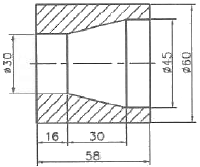
- 약 10도
- 약 12도
- 약 14도
- 약 18도
(정답률: 42%)
3. 일반적으로 밀링머신의 크기는 호칭번호로 표시하는데 그 기준은 무엇인가?
- 기계의 중량
- 기계의 설치면적
- 테이블의 이동거리
- 주축모터의 크기
(정답률: 80%)
4. 연한 갈색으로 일반 강의 연삭에 사용하는 연삭숫돌의 재질은?
- A 숫돌
- WA 숫돌
- C 숫돌
- GC 숫돌
(정답률: 47%)
5. CNC 프로그래밍에서 좌표계 주소(Address)와 관련이 없는 것은?
- X, Y, Z
- A, B, C
- I, J, K
- P, U, X
(정답률: 51%)
6. 피측정물과 표준자와는 측정방향에 있어서 1직선 위에 배치하여야 한다는 것은?
- 헤르츠의 법칙
- 후크의 법칙
- 애어리점
- 아베의 원리
(정답률: 81%)
7. 벨트를 풀리에 걸 때는 어떤 상태에서 해야 안전한가?
- 저속 회전 상태
- 중속 회전 상태
- 회전 중지 상태
- 고속 회전 상태
(정답률: 86%)
8. 밀링에서 상향절삭과 하향절삭의 비교 설명으로 맞는 것은?
- 상향절삭은 절삭력이 상향으로 작용하여 가공물 고정이 유리하다.
- 상향절삭은 기계의 강성이 낮아도 무방하다.
- 하향절삭은 상향적삭에 비하여 공구 마모가 빠르다.
- 하향절삭은 백래시(back lash)를 제거할 필요가 없다.
(정답률: 54%)
9. 연삭숫돌의 입자 중 천연입자가 아닌 것은?
- 석영
- 코런덤
- 다이아몬드
- 알루미나
(정답률: 70%)
10. 판재 도는 포신 등의 큰 구멍 가공에 적합한 보링머신은?
- 코어 보링머신
- 수직 보링머신
- 보통 보링머신
- 지그 보링머신
(정답률: 52%)
11. 어미자의 1눈금이 0.5mm이며 아들자의 눈금이 12mm를 25등분한 버니어 캘리퍼스의 최소 측정값은?
- 0.01mm
- 0.⑤mm
- 0.02mm
- 0.1mm
(정답률: 48%)
12. 방전가공에서 전극재료의 조건으로 맞지 않은 것은?
- 방전이 안전하고 가공속도가 클 것
- 가공에 따른 가공전극의 소모가 적을 것
- 공작물보다 경도가 높을 것
- 기계가공이 쉽고 가공정밀도가 높을 것
(정답률: 63%)
13. 다음 중 다이얼 게이지(dial gauge)의 특성이 아닌 것은?
- 다원측정의 검출기로서 이용할 수 있다.
- 눈금과 지침에 의해서 읽기 때문에 오차가 적다.
- 연속된 변위량의 측정이 가능하다.
- 측정점위가 넓고, 직접제품의 치수를 읽을 수 있다.
(정답률: 55%)
14. 연삭숫돌을 고무 해머로 때려 검사한 결과 울림이 없거나 둔탁한 소리가 나는 것은?
- 완전한 숫돌
- 균열이 생긴 숫돌
- 두께가 두꺼운 숫돌
- 두께가 얇은 숫돌
(정답률: 58%)
15. 브로칭머신에서 브로치를 인발 또는 압입하는 방법에 속하지 않는 것은?
- 나사식
- 기어식
- 유압식
- 압출식
(정답률: 54%)
16. 연성 재료를 고속 절삭할 때 생기는 칩의 형태는?
- 유동형(flow tyrpe)
- 균열형(cksck typre)
- 열단형(teatr tyrpe)
- 전단형(shear tyrpe)
(정답률: 75%)
17. 밀링작업에서 일감의 가공면에 떨림(chattering)이 나타날 경우 그 방지책으로 적합하지 않는 것은?
- 밀링커터의 정밀도를 좋게 한다.
- 일감의 고정을 확실히 한다.
- 절삭조건을 개선한다.
- 회전속도를 빠르게 한다.
(정답률: 79%)
18. 바이트의 여유각을 주는 가장 큰 이유는?
- 바이트의 날끝과 공작물 사이의 마찰을 줄이기 위하여
- 공작물의 깍이는 깊이를 적게하고 바이트의 날 끝이 부러지지 않도록 보호하기 위하여
- 바이트가 공작물을 깍는 쇳가루의 흐름을 잘되게 하기 위하여
- 바이트의 재질이 강한 것이기 때문에
(정답률: 55%)
19. 면판붙이 주축대 2대를 마주 세운 구조형으로 된 선반은?
- 차측선반
- 차륜선반
- 공구선반
- 직립선반
(정답률: 56%)
20. 절삭속도가 140m/min, 이송이 0.25mm/rev인 절삭조건을 사용하여 ø80mm인 환봉을 ø75mm로 1회 절삭하려고 할 때 소요되는 가공시간은 약 몇 분인가? (단, 절삭 길이는 300mm이다.)
- 2분
- 4분
- 6분
- 8분
(정답률: 38%)
2과목: 기계제도
21. 다음 도면에서 A~D 선의 용도에 의한 명칭이 잘못된 것은?
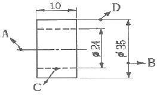
- A:중심선
- B:치수선
- C:숨은선(은선)
- D:지시선
(정답률: 83%)
22. 다음 재료 기호 중 회주철품의 KS 기호는?
- FC
- DC
- GC
- SC
(정답률: 76%)
23. 3줄 M20×2와 같은 나사 표시 기호에서 라드는 얼마인가?
- 5mm
- 2mm
- 3mm
- 6mm
(정답률: 78%)
24. 아래 그림에서 ø20 부분의 최대 실체 공차방식에 의한 실효치수는 몇 mm인가?
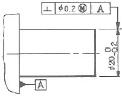
- ø19.6
- ø19.8
- ø20.2
- ø20.4
(정답률: 58%)
25. KS 기계제도에 의한 다음 그림과 같은 부등변 ㄱ형강의 표시방법으로 가장 적합한 것은?
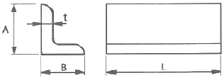
- L t×A×L-B
- L A×B×t-L
- L t×B×L-A
- LA×L×B-t
(정답률: 86%)
26. 그림과 같은 정면도와 평면도에 가장 적합한 우측면도는?
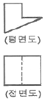
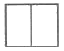
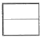
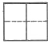
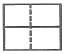
(정답률: 72%)
27. 강구조물(steel structure) 등의 치수 표시에 관한 KS 기계 제도 규격에 관한 설명으로 틀린 것은?
- 구조선도에서 절정 사이의 치수를 표시할 수 있다.
- 치수는 부재를 나타내는 선에 연하여 직접 기입할 수 있다.
- 절점이란 구조선도에 있어서 부재의 단순 중심점이다.
- 형강, 각강 등의 치수는 각각의 표시 방법에 의해서 도형에 연하여 기입할 수 있다.
(정답률: 47%)
28. 용접 기호 중에서 필릿 용접 기호는?
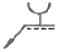
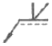
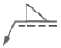
(정답률: 86%)
29. 가공방법의 약호 중 래핑가공을 나타낸 것은?
- FL
- FR
- FS
- FF
(정답률: 73%)
30. 리벳의 호칭법으로 가장 적합한 것은?
- (종류)×(길이)(지름)(재료)
- (종류)(지름)×(길이)(재료)
- (종류)(재료)(지름)×(길이)
- (종류)(재료)×(지름)(길이)
(정답률: 61%)
31. 다음은 치수 공차와 끼워맞춤 공차에 사용하는 용어의 설명이다. 용어의 설명이 잘못된 것은?
- 틈새:구멍의 치수가 축의 치수보다 클 때의 구멍과 축의 치수 차
- 위 치수 허용차:최대 허용치수에서 기준치수를 뺸 값
- 헐거운 끼워 맞품:항상 틈새가 있응 끼워 맞춤
- 치수공차:기준 치수에서 아래 치수 허용차를 뺀 값
(정답률: 72%)
32. 그림과 같은 입체도에서 화살표 방향이 정면일 경우 평면고로 가장 적합한 것은?
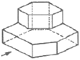
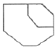
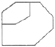
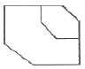
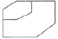
(정답률: 83%)
33. 일반적으로 해칭선을 그릴 때 사용하는 선의 명칭은?
- 굵은 2점 쇄선
- 굵은 1점 쇄선
- 가는 실선
- 가는 1점 쇄선
(정답률: 82%)
34. 그림과 같이 절단된 편심 원뿔의 전개법으로 가장 적합한 것은?
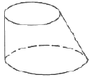
- 삼각형법
- 평행선법
- 사각형법
- 동심원법
(정답률: 66%)
35. 그림과 같이 스퍼 기어의 주투상도를 부분 단면도로 나타낼 때, “A”가 지시하는 곳의 선의 모양은?
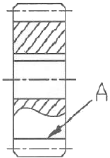
- 굵은 실선
- 굵은 파선
- 가는 실선
- 가는 파선
(정답률: 57%)
36. "A“와 같은 현상을 "B"에 조립시킬 때 ”?“에 필요한 기하공차 기호는? (단, A의 형상은 이상적으로 정확한 형상이라 가정한다.)
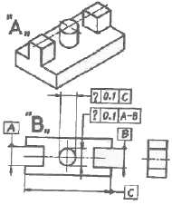
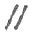
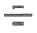
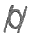
(정답률: 42%)
37. ø40H7의 구멍에 헐거운 끼워 맞춤이 되는 축의 치수는?
- ø40n6
- ø40p6
- ø40t6
- ø40g6
(정답률: 83%)
38. 구름 베어링 호칭 번호가 6000일 때 안지름은 몇 mm인가?
- 5
- 8
- 10
- 50
(정답률: 80%)
39. 다음 중 도면이 전체적으로 차수에 비례하지 않게 그려졌을 경우에 표시 방법으로 올바른 것은?
- 치수를 적색으로 표시한다.
- 치수에 괄호를 한다.
- 척도에 NS로 표시한다.
- 치수에 ※표를 한다.
(정답률: 73%)
40. 다음 중 복렬 자동 볼 베어링의 약식 도시 기호가 바르게 표시된 것은?
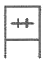
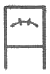
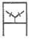
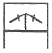
(정답률: 65%)
3과목: 기계설계 및 기계재료
41. 백주철을 고온에서 장시간 열처리하여 시멘타이트 조직을 분해하거나 소실시켜 인성 또는 연성을 개선한 주철은?
- 가단 주철
- 칠드 주철
- 구상흑연 주철
- 합금 주철
(정답률: 63%)
42. 줄(File)의 재질로는 보통 어떤 강을 사용하는가?
- 고속도강
- 탄소공구강
- 초경합금강
- 톰백
(정답률: 54%)
43. 구리합금 중 6:4 황동에 약 0.8% 정도의 주석을 첨가하여 내해수성이 강하기 때문에 선박용 부품에 사용하는 특수 황동은?
- 네이벌 황동
- 강력 황동
- 납 황동
- 애드미럴티 황동
(정답률: 76%)
44. 일반적으로 금속재료에 비하여 세라믹의 특징으로 옳은 것은?
- 인성이 풍부하다.
- 내산화성이 양호하다.
- 성형성 및 기계가공성이 좋다.
- 내충격성이 높다.
(정답률: 51%)
45. 다음 중 아공석강에서 탄소강의 탄소함유량이 증가할 때 기계적 성질을 설명한 것으로 틀린 것은?
- 인장강도가 증가한다.
- 경도가 증가한다.
- 항복점이 증가한다.
- 연신율이 증가한다.
(정답률: 67%)
46. 풀림 처리의 목적으로 가장 적합한 것은?
- 연화 및 내부응력 제거
- 경도의 증가
- 조직의 오스테나이트화
- 표면의 경화
(정답률: 67%)
47. 일반적인 합금의 성질을 설명한 것으로 틀린 것은?
- 전기 전도율이나 열전도율이 낮아진다.
- 강도와 경도가 커지고 전성과 연성이 작아진다.
- 용해점이 높아진다.
- 담금질 효과가 크다.
(정답률: 43%)
48. Al-Cr-Mo강을 가스질화 할 때 처리온도로 적당한 것은?
- 370~450℃
- 500~550℃
- 650~700℃
- 850~900℃
(정답률: 54%)
49. 탄소강을 담금질할 때 이용하는 냉각체 중에서 냉각성능이 큰 것부터 나열된 것은?
- 10% 식염수＞기름＞물
- 물＞기름＞10% 식염수
- 10% 식염수＞물＞기름
- 기름＞물＞10% 식염수
(정답률: 69%)
50. 금반지를 18(K)금으로 만들었다. 순금(Au)은 몇 %가 함유된 것인가?
- 18
- 34
- 75
- 100
(정답률: 69%)
51. 다음 중 전달할 수 있는 회전력의 크기가 가장 큰 키(key)는?
- 접선 키
- 안장 키
- 평행 키
- 둥근 키
(정답률: 50%)
52. 축의 지름에 비하여 길이가 짧은 축을 말하며, 비틀림과 굽힘을 동시에 받는 축으로 공작기계의 주축 및 터빈 축등에 사용하는 것은?
- 차축(axie shaft)
- 전동축(transmission shaft)
- 스핀들(spindle)
- 유연성 축(flexible shaft)
(정답률: 50%)
53. 표준 스퍼기어에서 모듈 5, 잇수 17개, 압력각이 20°라고 할 때, 법선피치(pn)은 약 몇 mm인가?
- 18.2
- 14.8
- 15.6
- 12.4
(정답률: 36%)
54. 구름 베어링 중에서 가장 널리 사용되는 것으로 구조가 간단하고 정밀도가 높아서 고속 회전용으로 적합한 베어링은 어느 것인가?
- 깊은 홈 볼 베어링
- 마그네토 볼 베어링
- 앵귤러 볼 베어링
- 자동 조심 볼 베어링
(정답률: 54%)
55. 리벳이음에서 리벳 지름을 d, 피치를 p라 할 때 강판의 효율 η로 옳은 것은? (단, 1줄 리벳 겹치기 이음이다.)
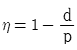
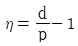
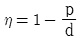
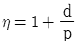
(정답률: 60%)
56. 풀리의 지름 200mm, 회전수 1600rpm으로 4kW의 동력을 전달할 때 벨트의 유효 장력은 약 몇 N인가? (단, 원심력과 마찰은 무시한다.)
- 24
- 93
- 239
- 527
(정답률: 47%)
57. 이론적으로 사각나사의 효율을 최대로 하는 리드각(λ)은 얼마인가? (단, ρ는 마찰각이다.)
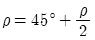
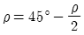
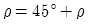
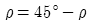
(정답률: 54%)
58. 다음 중 자동 하중 브레이크에 속하는 것은?
- 밴드 브레이크(band brake)
- 블록 브레이크(block brake)
- 윔 브레이크(worm brake)
- 원추 브레이크(cone brake)
(정답률: 52%)
59. 지름이 2cm의 봉재에 인장하중이 400N이 작용할 때 발생하는 인장응력은 약 얼마인가?
- 127.3N/cm2
- 127.3N/mm2
- 172.8N/cm2
- 172.8N/mm2
(정답률: 52%)
60. 스프링 코일의 평균지름 60mm, 유효권수 10, 소재 지름 6mm, 가로탄성계수(G)는 78.48GPa이고, 이 스프링에 하중 490N을 받을 때 코일 스프링의 처짐을 약 몇 mm가 되는가?
- 6.67
- 83.2
- 8.3
- 66.7
(정답률: 37%)
4과목: 컴퓨터응용설계
61. 다음 중 기존의 제품에 대한 치수를 측정하여 도면을 만드는 작업을 부르는 말로 적절한 것은?
- RE(Reverse Engineering)
- FMS(Flexible Manfacturing System)
- EDP(Electronic Data Processing)
- ERP(Enterprise Resource Planning)
(정답률: 73%)
62. 자체 발광기능을 가진 형광체 유기 화합물을 사용하는 발광형 디스플레이로서 생감을 떨어뜨리는 백라이트 즉후광장치가 필요 없는 디스플레이 장치는?
- CRT(cathode ray tub) 디스플레이
- TFT-LCD(Thin film transistor-Liquid crystal display)
- OLED(Organic light emitting diode) 디스플레이
- PDP(plasma display panel)
(정답률: 68%)
63. 특징 형상 모델링(Feature-based Modeling)의 특징으로 거리가 먼 것은?
- 기본적인 형상 구성 요소와 형상 단위에 관한 정보를 함께 포함하고 있다.
- 전형적인 특징 형상으로 모떼기(chamfer), 구멍(hole), 슬롯(slot) 등이 있다.
- 특징 형상 모델링 기법을 응용하여 모델로부터 공정 계획을 자동으로 생성시킬 수 있다.
- 주로 트위킹(tweaking) 기능을 이용하여 모델링을 수행한다.
(정답률: 67%)
64. 이미 정의된 두 곡면을 부드럽게 연결하는 것을 뜻하는 용어는?
- Blending
- Remeshing
- Sweep
- Smoothing
(정답률: 74%)
65. 2차원 좌표상에서의 동차변환행렬이 다음과 같을 때, a, b, c, d와 관계가 없는 것은? (단, 동차변환식은 P'=PTH이다.)
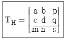
- 전단변환(shearing)
- 회전변환(rotation)
- 스케일링변환(scaling)
- 이동변환(translation)
(정답률: 44%)
66. 점 P(3, 5)의 원점을 중심으로 반시계방향으로 90° 회전시킬 때 회전한 점의 좌표는? (단, 반시계 방향을 양(+)의 각으로 한다.)
- (3, -5)
- (-5, 3)
- (-3, 5)
- (5, -3)
(정답률: 45%)
67. 원뿔을 임의의 평면으로 교차시킨 경우에 나타나는 원추단면곡선에 해당하지 않는 것은?
- 사각형(rectangle)
- 원(circle)
- 타원(ellipse)
- 쌍곡선(hyperbola)
(정답률: 75%)
68. 모델링에서 은선과 은면을 제거하는 방법 중 하나로 z-버퍼 방법이 있는데 이와 관련한 설명으로 틀린 것은?
- z-버퍼 방법은 수많은 화소들 만큼 많은 실수 변수들을 저장하기 위한 매우 많은 메모리 공간을 요구한다.
- 임의의 스크린의 영역이 관찰자에게 가장 가까운 요소들에 의해 차지된다는 깊이 분류 알고리즘과 동일한 원리에 기초를 둔다.
- 깊이분류 알고리즘과 다른 점은 면이 무작위 순서로 투영된다.
- z-버퍼를 이용한 은면 제거에서 법선벡터가 관찰자로부터 먼 쪽을 향하고 있는 면은 가시적(visible)이다.
(정답률: 37%)
69. CAD 용어에 관한 설명으로 틀린 것은?
- 표시하고자 하는 화면상의 영역을 벗어나는 선들을 잘라 버리는 것을 트리밍(trimming)이라고 한다.
- 물체를 완전히 관통하지 않는 홈을 형성하는 특징 형상을 포켓(pocket)이라고 한다.
- 명령의 실행 또는 마우스 클릭시마다 On 또는 Off가 번갈아 나타나는 세팅을 토클(toggle)이라고 한다.
- 모델을 명암이 포함된 색상으로 처리한 솔리드로 표시하는 작업을 셰이딩(shading)이라 한다.
(정답률: 63%)
70. 컴퓨터에서 최소의 입출력 단위로 물리적으로 읽기를 할 수 있는 레코드에 해당하는 것은?
- block
- field
- word
- bit
(정답률: 57%)
71. 다음 중 지정된 모든 점을 통과하면서 부드럽게 연결한 곡선은?
- spline 곡선
- Bezir 곡선
- B-spline 곡선
- NURBS 곡선
(정답률: 63%)
72. 솔리드 모델링에서 CSG 데이터 구조에 대한 일반적인 설명으로 틀린 것은?
- 데이터구조가 간단하고 데이터의 양이 적다.
- CSG 구조로 저장된 데이터는 B-rep 데이터로 치환할 수 없다.
- CSG 데이터 구조를 사용할 경우 모델링 입력방법으로 블리언 작업만 사용해야 한다.
- 저장된 입체로부터 경계면이나 경계선의 정보를 유도해내는데 많은 계산이 요구된다.
(정답률: 44%)
73. 컴퓨터 하드웨어 중 수학적 계산과 논리적인 처리가 수행되어지는 것은?
- DISC DRIVE
- CPU
- Monitor
- PRINTER
(정답률: 82%)
74. 다음 중 서로 다른 기종의 CAD 데이터를 호환하기 위한 데이터 포맷으로 적절하지 않은 것은?
- DXF
- IGES
- STEP
- OpenGL
(정답률: 79%)
75. 좌표계로 원점이 중심이고 경도 u, 위도 ν로 표시되는 구(sphere)의 매개변수식으로 옳은 것은? (단, 구의 반경은 R로 가정하고,
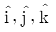
는 각각 x, y, z축 방향의 단위벡터이며, 0≦u≦2π, -π/2≦ν≦π/2이다.)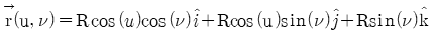
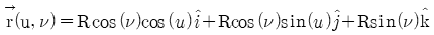
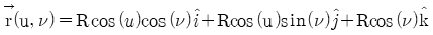
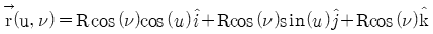
(정답률: 49%)
76. 일반적으로 3차원 좌표계에서 사용되는 동차변환행렬(homogeneous transformation matrix)의 크기는?
- (2×2)
- (3×3)
- (4×4)
- (5×5)
(정답률: 58%)
77. 직육면체, 원동, 구 등의 기본도형에 대한 집한 연산을 통하여 형상 모델을 구축해 나가는 방식은?
- 스윕 방식
- CSG 방식
- B-rep 방식
- 서피스 모델 방식
(정답률: 59%)
78. 디지털 목업(digital mock-up)에 관한 설명으로 거리가 먼 것은?
- 실물 mock-up의 사용빈도를 줄일 수 있는 대안이다.
- 간섭검사, 기구학적 검사 그리고 조립체 속을 걸어 다니는듯한 효과 등을 낼 수 있다.
- 적어도 surface나 solid model로 제품이 모델링되어야 한다.
- 조립체 모델링에는 아직 적용되지 않는다.
(정답률: 73%)
79. 곡선의 양 끝점을 P0과 P1, 양 끝점에서의 접선 벡터를 P'0과 P'1이라고 할 때, 아래와 같은 식으로 표현되는 곡선은?
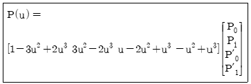
- Bezier 곡선
- B-spllne 곡선
- Hermite 곡선
- NURBS 곡선
(정답률: 52%)
80. 공간상에서 선을 이용하여 3차원 물체의 표시하는 와이어 프레임 모델의 특징을 설명한 것 중 틀린 것은?
- 3면 투시도 작성이 용이하다.
- 단면도 작성이 불가능하다.
- 물리적 성질의 계산이 가능하다.
- 은선제거가 불가능하다.
(정답률: 73%)